/01
Crossbody Bag
Bag /Own pattern 2023
Cotton canvas, silk lining. Two weeks, drafted from scratch — the first thing I ever made.

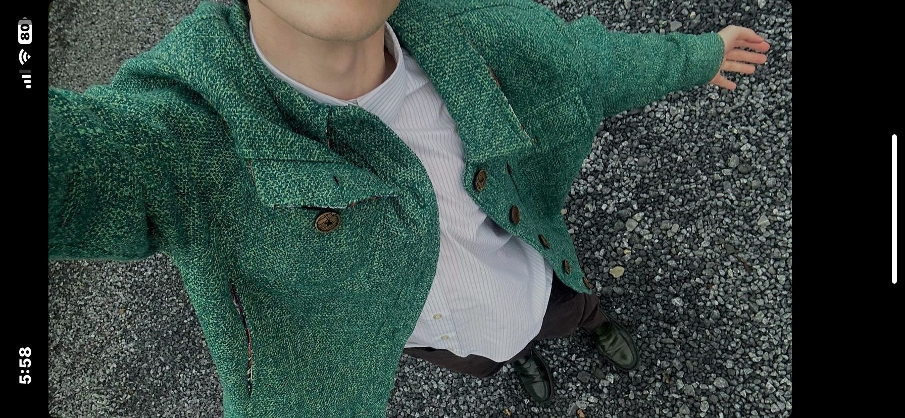
An engineer who plays with garments and fabrics.
Looking for an atelier internship
My mother signed up for a garment-making class with some friends. A few weeks in, she asked me to help her with the basic technical pattern drawing — I was studying industrial engineering, so the drawing was familiar ground. I helped her, and I realised that learning about patterns and garments would be one of the most stimulating things I could do.
At the beginning everything was pure intuition, and it turned out surprisingly well. That gave me the confidence to start proper pattern-making courses with a teacher who is both exceptional and deeply experienced.
Since then, alongside my industrial engineering degree at the ETSI, University of Seville — I am now in my fourth year — I have made eight pieces. Two are my own patterns; the other six are technical studies after garments I admire — I take the garment apart on paper, redraw the pattern, and build it again.

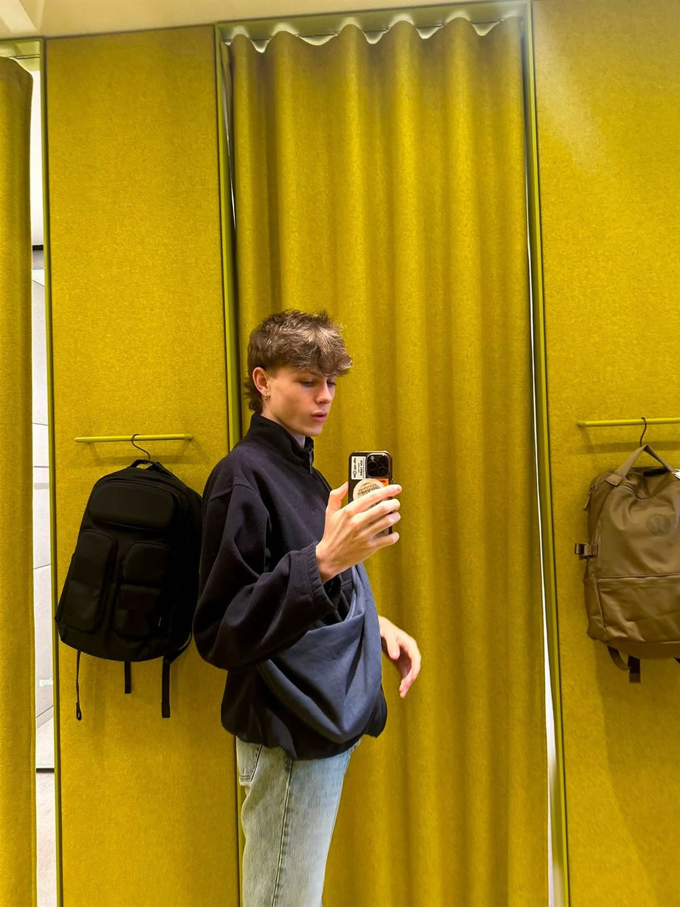
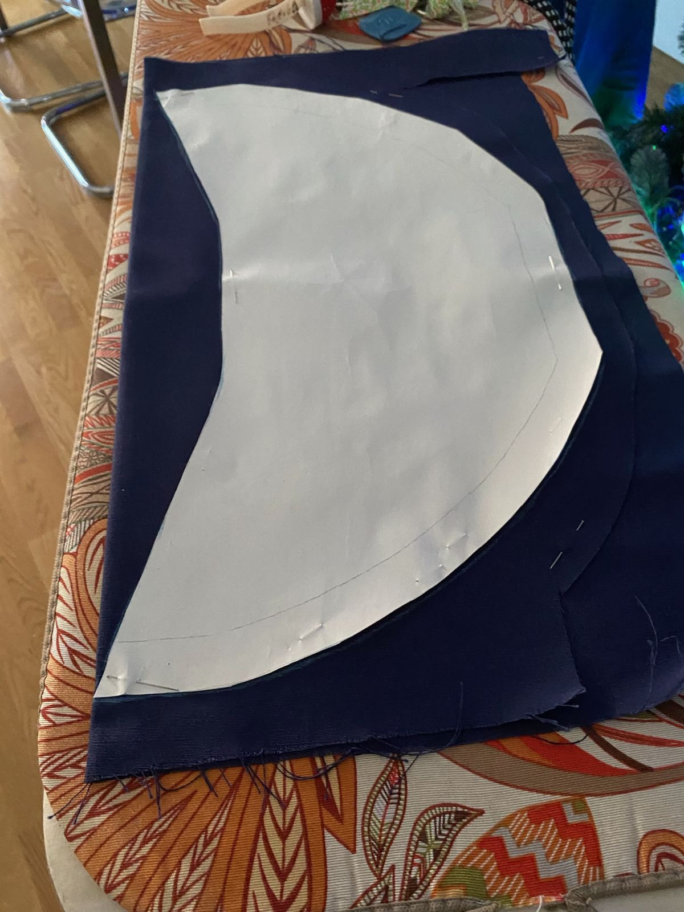


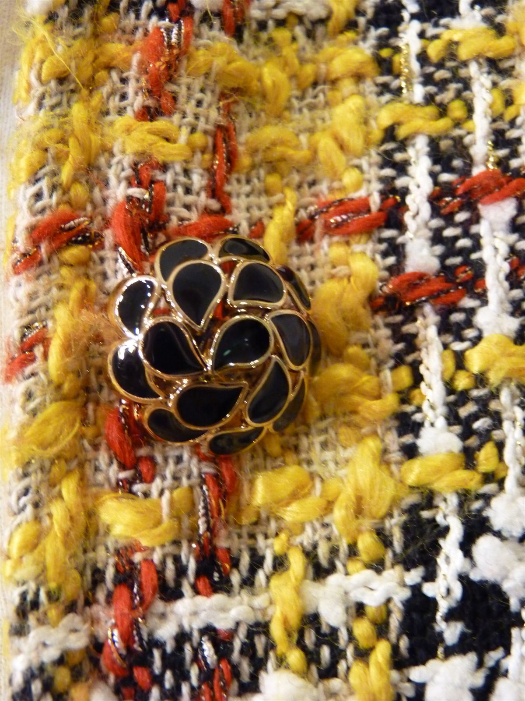
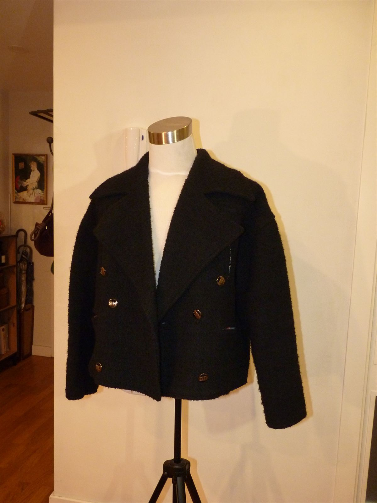

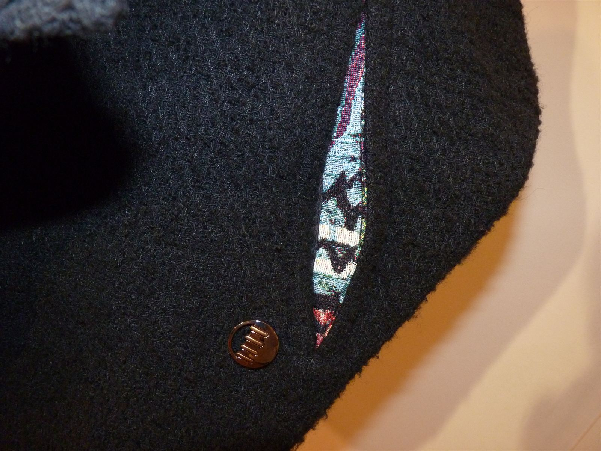


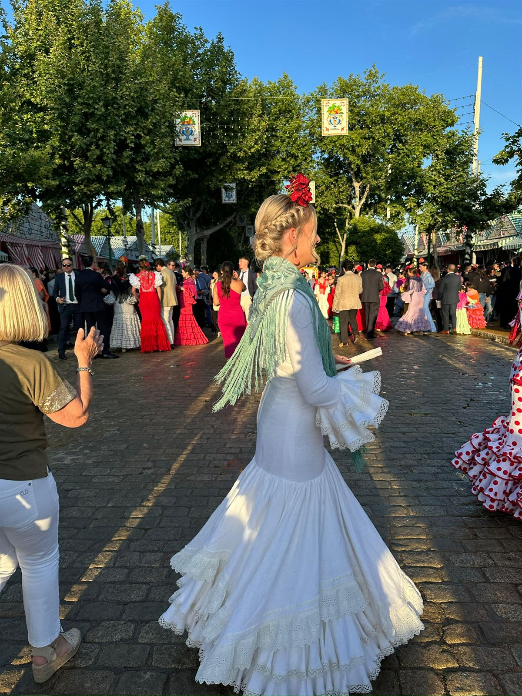


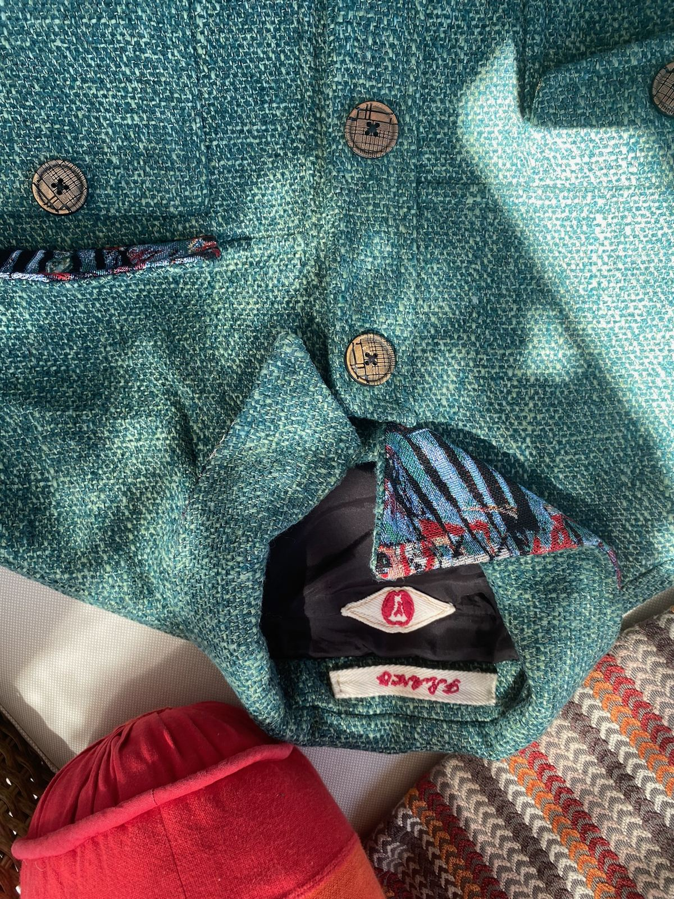
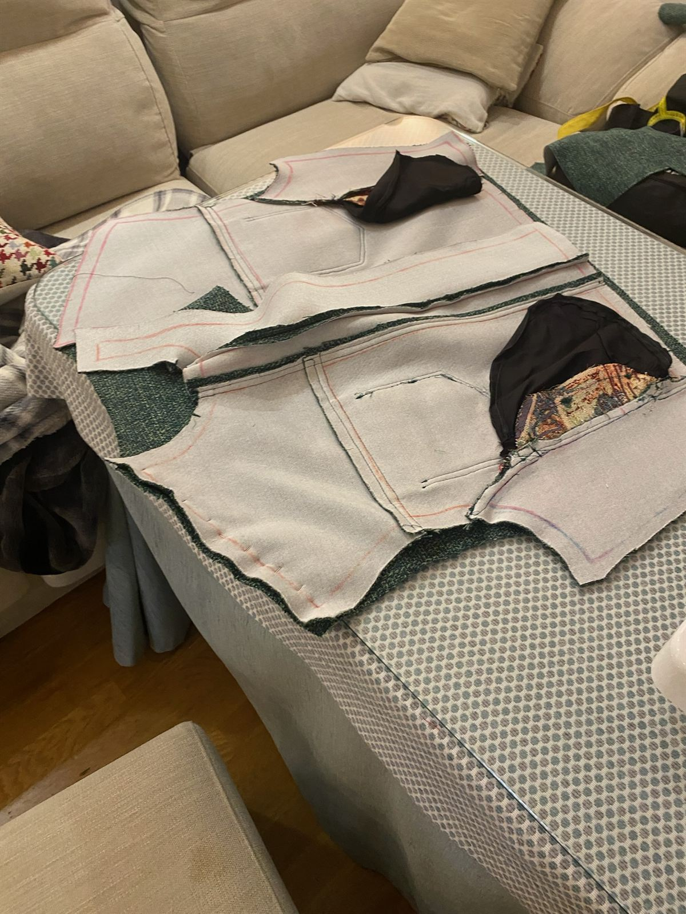


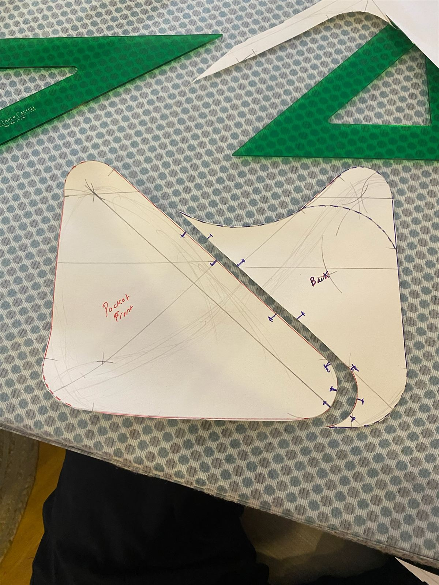
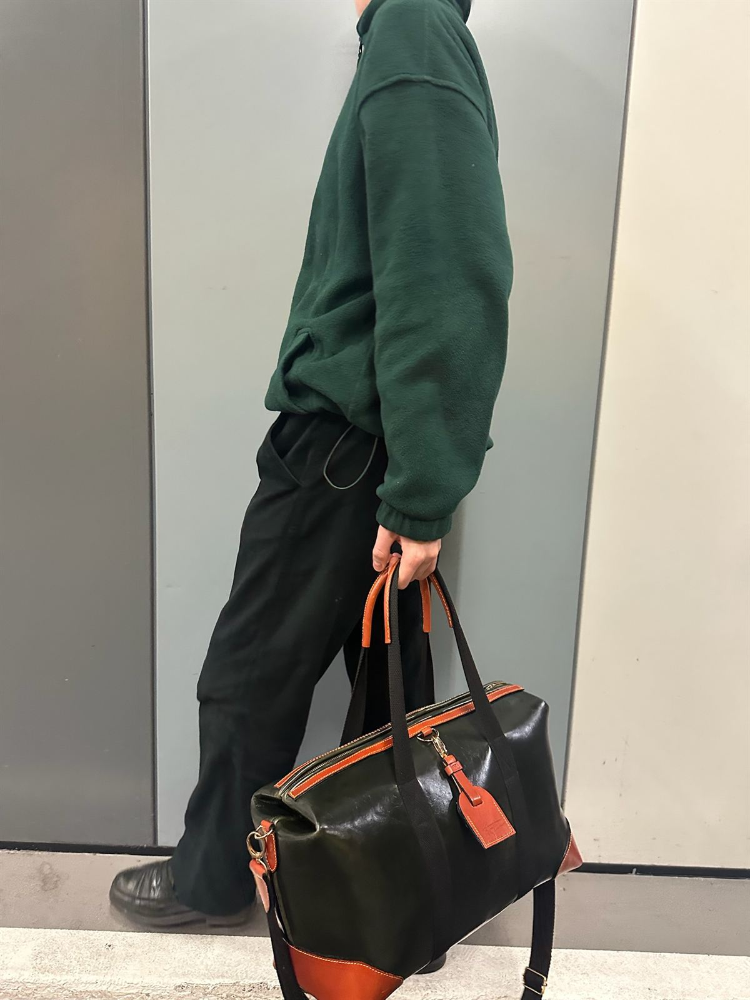


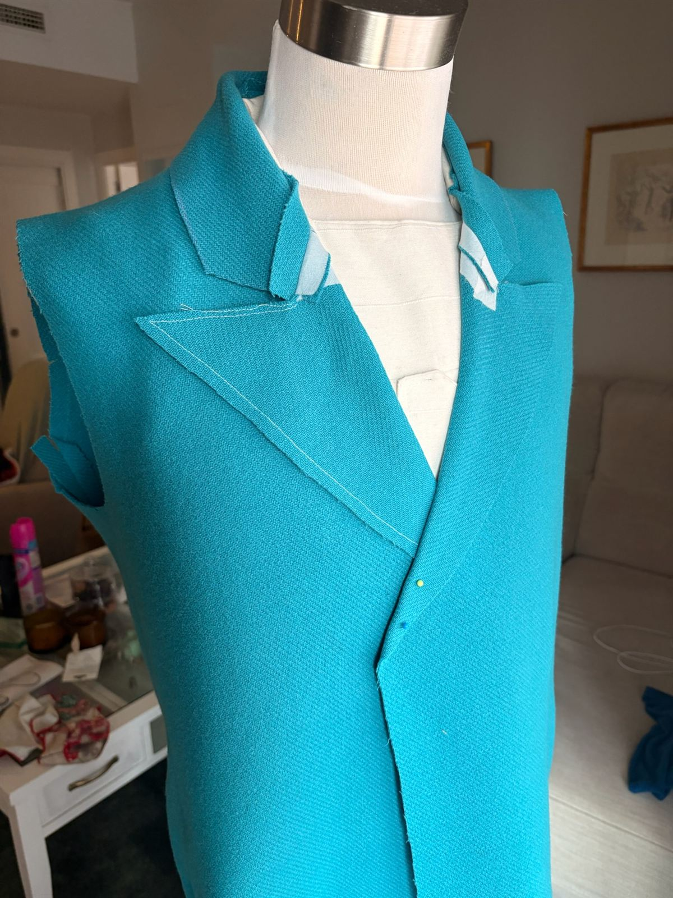


/01
Bag /Own pattern 2023
Cotton canvas, silk lining. Two weeks, drafted from scratch — the first thing I ever made.
/02
Outerwear /Study after 2024
Wool-blend tweed, canvas interlining, enamel buttons. Five weeks. The check matched across both fronts.
/03
Tailoring /Study after 2024
Black wool bouclé, printed lining. Three weeks. Cropped at the high hip: structure without stiffness.
Couture /Own pattern 2024–2025
Nine metres of cotton poplin, winter 2024 to spring 2025. Six panels, three circular tiers, worn at the April feria.
/05
Outerwear /Study after 2024
Heavy upholstery cloth. Six weeks. The sleeves were made twice — the piece I learned most from.
/06
Shirting /Study after 2024
Off-white cotton-linen. Two weeks. Tucks stitched first, pattern cut after: no margin for error.
/07
Bag /Study after 2024
Black cowhide, tan leather base, brass hardware. Three months. Every panel tested in card first.
/08
Outerwear /Study after 2026 — in progress
Teal wool melton, viscose lining. Still on the table. Mid-calf length, a faced hem to take the bulk out.